Perfil del atleta
Identidad deportiva, información de membresía y acceso a sus datos.
Kileaaa es la plataforma de gestión de torneos y ligas que TTMPR desarrolla para el tenis de mesa de Puerto Rico: inscripciones, siembra, cuadros, marcador en vivo y publicación de resultados, conectados con perfiles, ratings e historial competitivo.

Kileaaa busca reutilizar la arquitectura y los registros deportivos existentes en lugar de crear identidades duplicadas para los atletas.
Identidad deportiva, información de membresía y acceso a sus datos.
Consulta integrada de clasificaciones, participación y trayectoria competitiva.
Proceso diseñado para vincular cuentas con registros existentes y evitar duplicados.
Inscripciones, categorías, siembra, generación automática de cuadros, marcador en vivo y publicación de resultados.
Funciones para revisar membresías, administrar eventos, configurar su impacto en rating e integrar patrocinios.
Una línea de desarrollo futura para facilitar trabajo con clubes y sus atletas.
El trabajo actual se concentra en reunir y validar los flujos de jugadores y organizadores con los datos ya existentes. Las funciones de perfil, reclamación, permisos, estadísticas avanzadas y herramientas para clubes están sujetas a pruebas y futuras versiones.
Integrar ratings, historial y registros existentes.
Verificar identidad y reclamación de perfiles.
Validar acciones del organizador y permisos.
Evolucionar hacia servicios para atletas y clubes.
Conoce otra parte del ecosistema que impulsa TTMPR.